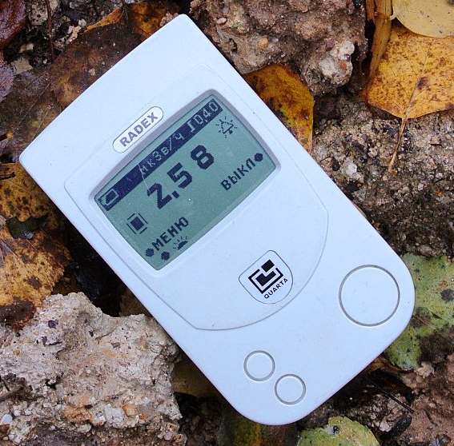
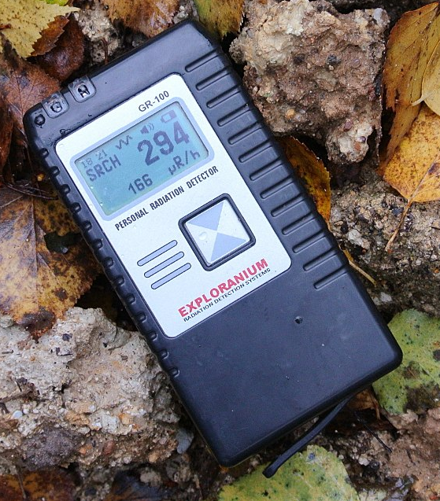
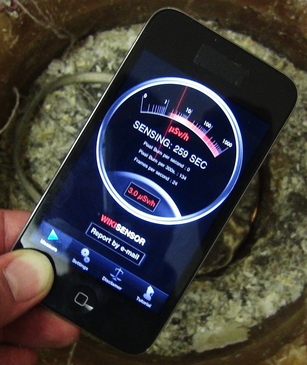

В магазинах вы можете встретить «индикаторы радиоактивности», «дозиметры» и «дозиметры-радиометры».
Первые — это приборы, которые не проходят сколько-нибудь существенных испытаний и вообще на точность измерений не претендуют. Почти всегда они сделаны на базе счётчика Гейгера типа СБМ-20. Реже — на базе миниатюрного СБМ-21 или на базе чувствительных к альфа-излучению счётчиков, например Бета-1 или Бета-2. Многие считают, что такие приборы могут занижать показания. Некоторые «профессионалы» заявляют, что при низкой энергии гамма-излучения, на уровне 30-100 кэВ, приборы на СБМ-20 и СБМ-21 занижают в разы, а ниже вообще не фиксируют. Мой же опыт показывает, что всё с точностью до наоборот: при низкой энергии гамма-излучения (опыты ставились с 59 кэВ) они в разы завышают свои показания. Конечно, гамма-излучение совсем низкой энергии они не зафиксируют, но оно и не представляет большой опасности, т.к. поглощается ещё в коже. Бета-1 и Бета-2 фиксируют все виды излучения, причём ещё сильнее завышают показания при низкой энергии гамма-излучения.
Дозиметром честный производитель обычно называет прибор, точности измерения которым уделялось какое-никакое внимание. Чаще всего они тоже сделаны на базе СБМ-20, но тот уже закрыт специальным съёмным фильтром, который ослабляет гамма-излучение низкой энергии и полностью поглощает бета-излучение. Это позволяет точно измерить уровень гамма-излучения в широком диапазоне энергий. Также эти приборы обычно умеют интегрировать показания за длительное время, показывая не только мощность дозы, но и саму дозу. Приборы по-лучше содержат датчики Бета-1, Бета-2 или другие со слюдяным окном для бета-излучения низкой энергии и альфа-излучения, тоже оснащены фильтрами. Совсем дорогие приборы могут использовать полупроводниковые или сцинтилляторные датчики, которые имеют огромную чувствительность к гамма-излучению и не просто фиксируют частицы, а измеряют их энергию. Это позволяет максимально точно измерить дозу, а некоторые модели даже умеют определять изотопы, которые вызывают облучение. Впрочем, полупроводники и сцинтилляторы могут сыграть злую шутку: у них чувствительность очень сильно зависит от энергии, так что измерять её не просто можно, а обязательно нужно. И нужно качественно учесть зависимость чувствительности от энергии. Если такой датчик воткнули в прибор только для громкой надписи «сцинтилляторный», то точность измерений у него может быть хуже, чем у дешёвых индикаторов радиоактивности.
Дозиметр-радиометр — это прибор, который кроме дозы гамма-излучения измеряет ещё и поток бета-частиц (при соответствующих датчиках — и альфа). Два предыдущих пункта тоже фиксируют бета-излучение (дозиметры — при снятом фильтре), но они продолжают пересчитывать показания в рентгены или зиверты, как если бы это было гамма-излучение. Результат получается абсолютно неправильным: если для гамма-излучения вероятность фиксации частицы счётчиком Гейгера прямо пропорциональна его энергии в довольно широком диапазоне (где-то от 0,3 до 1,5 МэВ), причём этот диапазон расширяется фильтрами вниз где-то до 0,03-0,05 МэВ, то для бета-излучения ничего подобного нет. В первом приближении выше определённой границы энергии датчик фиксирует почти все бета-частицы, а ниже — ни одной. Аналогично и с альфа-излучением (если счётчик его в принципе фиксирует). Радиометру же можно «сказать», что ты сейчас измеряешь бета-излучение, и тогда он будет пересчитывать показания в число частиц на квадратный сантиметр площади сечения датчика в единицу времени. Сначала измеряешь с фильтром, чтобы выяснить гамма-фон, потом без него, вычитаешь из второго первое — и вот поток бета-частиц. Для альфа всё тоже самое, только там ещё добавляется второй фильтр, который задерживает его, но пропускает бета-частицы. Иногда он встроен, иногда надо самому брать подручный, типа листа бумаги.
Есть ещё программные дозиметры для смартфонов, использующие закрытую непрозрачным материалом фотокамеру в роли эрзац детектора. Они реально работают, но по моему опыту ждать от них точности не приходится, могут ошибаться в разы в любую сторону.
Стоит также отметить, что при небольших уровнях радиации показания всех приборов оказываются не слишком точными: они фиксируют за цикл измерения лишь порядка десятка частиц, так что статистическая погрешность становится сравнимой с измеряемой величиной. Если сейчас прибор показывает 0,07 мкЗв/ч, а через минуту — 0,14 мкЗв/ч, это абсолютно не значит, что уровень радиации возрос в два раза. Скорее всего он как был 0,10 мкЗв/ч, так и остался.
Ещё замечание на счёт собственно измерений: нужно их проводить так, чтобы датчик прибора можно было считать точечным. Т.е. либо источник радиации, либо расстояние от него до датчика должно быть в разы больше самого датчика. Если вы тыкаете каплей радиевой краски на кончике тумблера в центр какой-нибудь Бета-2, то в разных точках датчика уровень радиации отличается на несколько порядков. Что датчик в таких условиях измеряет — «одному Богу известно». Измерения «на поверхности» допустимы либо для больших источников (загрязнённый грунт, например), либо когда мы не стремимся именно измерить, а лишь с максимальной чувствительностью зафиксировать факт наличия излучения.

Индикатор радиоактивности на месте радиоактивного заражения

Профессиональный сцинтилляторный дозиметр на месте радиоактивного заражения (уровень радиации — цифры внизу)

Программный дозиметр. В данном конкретном случае в 3-4 раза занижает показания